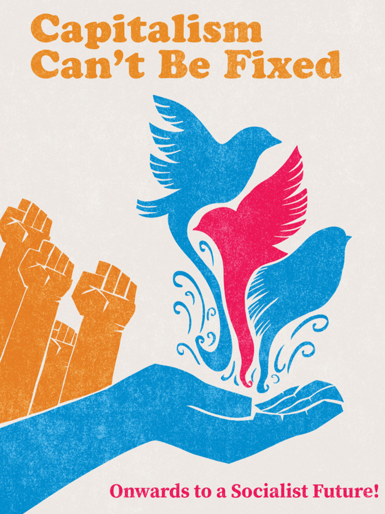

For NDP President / Pour la présidence du NPD Pour la présidence du NPD / For NDP President
NDP members should shape the direction of the party, not backroom administrators. It is time to restore internal democracy and rebuild our connection to working-class movements. Les membres du NPD devraient façonner l'orientation du parti, et non les administrateurs de l'ombre. Il est temps de restaurer la démocratie interne et de reconstruire notre lien avec les mouvements de la classe ouvrière.
Jasmine Peardon is an organizer and policy researcher running for President to ensure the NDP once again becomes a political home for grassroots activists, anti-imperialists, and social movements. Jasmine Peardon est une organisatrice et chercheuse en politiques qui se présente à la présidence pour s'assurer que le NPD redevienne un foyer politique pour les militants de la base, les anti-impérialistes et les mouvements sociaux.
The party’s current executive leadership has stripped membership, obstructed leadership races, and misclassified political critique as slander. Jasmine is running to end this centralization and place trust back in the members. La direction exécutive actuelle du parti a révoqué des adhésions, entravé les courses à la direction et qualifié les critiques politiques de calomnies. Jasmine se présente pour mettre fin à cette centralisation et redonner confiance aux membres.

This platform argues that the crises facing society today require structural transformation rather than small reforms. It calls for economic democracy, public ownership, and an anti-imperialist foreign policy. Cette plateforme soutient que les crises auxquelles la société est confrontée aujourd'hui nécessitent une transformation structurelle plutôt que de petites réformes. Elle appelle à la démocratie économique, à la propriété publique et à une politique étrangère anti-impérialiste.
Follow @jasminepeardon on Instagram
Send this page and the Capitalism Can't Be Fixed platform to your local EDA emails. Ask them to distribute it to members. Envoyez cette page et la plateforme vers les courriels de votre CÉL locale. Demandez-leur de les distribuer aux membres.
Post campaign graphics or captions: "The NDP should belong to its members. We need democracy inside the party." Publiez des graphiques de campagne : « Le NPD devrait appartenir à ses membres. Nous avons besoin de démocratie au sein du parti. »
Ask to read out a campaign statement in your caucus meeting, or invite Jasmine into the room to speak directly to delegates. Demandez à lire une déclaration de campagne lors de votre réunion de caucus, ou invitez Jasmine à parler directement aux délégués.
Hand out flyers and pamphlets. Talk to fellow delegates about the importance of shifting power from consultants to the grassroots. Distribuez des dépliants et des brochures. Parlez aux autres délégués de l'importance de transférer le pouvoir des consultants vers la base.
"If you are pushing for substantial change, you will face substantial push back. Be courageous and strong standing for what you believe the party needs." « Si vous poussez pour un changement substantiel, vous ferez face à une résistance substantielle. Soyez courageux et restez fermes sur ce dont le parti a besoin selon vous. »